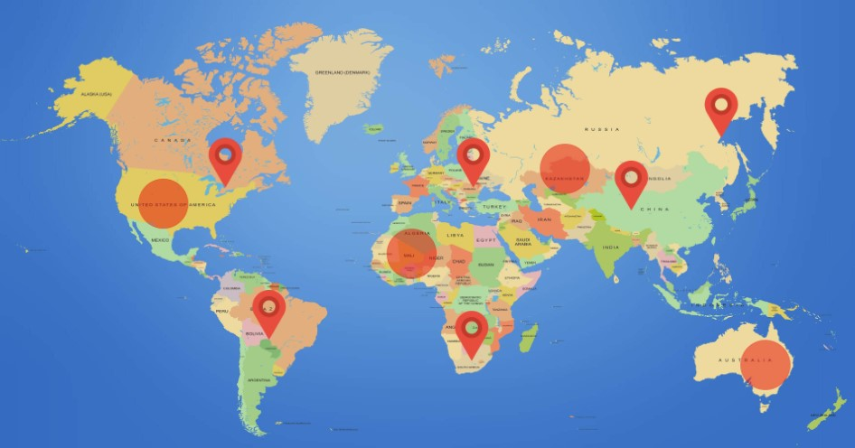

About ATLAS
A web platform that gathers relevant worldwide news across various genres and precisely maps articles to their respective locations.
Through the interactive layout, users gain further insight and visual awareness into pertinent current events.
Currently ATLAS is a front-end concept, however further development will likely involve more
web frameworks and API integration to retrieve the news articles, and a database to store user preferences.
Red pinpoint markers indicate articles that are recommended to users, while highlighted circle areas indicate areas of breaking news around the world.
